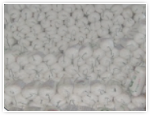

Product
Jukryeokwon
TOOTHBRUSING SALT
Jukryeokwon Toothbrushing Salt is made from natural sea salt from the mudflats along the southwestern coast of Korea.
It is naturally aged for a year or more, then centrifuged to remove bittern and impurities.
Jukryeokwon
Toothbrushing Salt
Jukryeokwon Toothbrushing Salt is made from natural
sea salt from the mudflats along the southwestern coast of Korea.
It is naturally aged for a year or more,
then centrifuged to remove bittern and impurities.
Ingredient
TOOTHBRUSHING SALT
and UNESCO Biosphere Reserve.
The natural sea salt made from the Shinan mudflats is one of
the richest in minerals in the world.
The salt that is been removed of bittern is
baked at 800 degrees, the melting point of salt,
for over 24 hours using transparent ceramic materials.
Through this process, harmful organic compounds, heavy metals,
and microplastics are perfectly removed to leave pure mineral salt.
If using salt to brush teeth, the salt’s sterilizing, anti-infectant,
and detoxifying effects work as a natural antibiotic to improve
the body’s immunity and prevent tooth decay,bad breath, and esophagitis.
PROCESSING SYSTEM
-
Natural Seal Salt
(Produced in the southeast
coast of Korea)Raw material
-
Natural aging
(1 year or over)1st bittern removal
-
Centrifuge
2nd bittern
removal -
Specially made
electric kilnBaked at 800
degrees for over
24 hours -
Hazardous organic
substances,
heavy metals,
microplastics removed
Harmful substances
removed -
Pure natural
minerals producedtoothbrushing salt
production
Jukryeokwon Toothbrushing Salt Usage How-to
-
TYPE.1
Plaque removing
Sprinkle on your toothbrush over toothpaste.
-
TYPE.2
Strong gums
If salt up to half or a third of your toothbrush.
If too little is used, the granules may cause bleeding.
Salt may be difficult to use the first time,
so try transitioning into it by sprinkling a small amount onto your toothpaste. -
TYPE.3
Mouthwash
Mix a little toothbrushing salt into a glass of water and gargle after brushing teeth.
When gargling with salt, osmotic pressure in the mouth helps fluid in cells to rise and keep the throat and mouth moist.
A dry mouth is prone to tooth cavities and a furred tongue, causing bad breath.
Saltwater gargling can help keep the mouth moist and is effective in improving bad breath.
Characteristics of
heat-heated electric furnaces
It doesn't happen at all. in a special way, not in a direct way.
Because they bake salt, dioxin...
It does not occur.
Manufacturing process
-
01. Ingredients purchased
natural sea salt made in Korea -

02. 1st bittern removal
Transportation and Storage -
03. 2nd bittern removal
CentrifugedCHECK POINT Gansu contains magnesium chloride,
sodium chloride, calcium chloride,
magnesium bromide, etc.
We have minerals and toxins.
It's not just fat and protein
in the body. coagulating
It works. -
04. Baked in special manufacturing kiln
Baked 24 hours or more at 800 degrees -
05. Baked salt is mixed with Jukryeok
-
06. Dried for 10 or more hours at 60 degrees
0.3% or less moisture -
07. Ground by granule size
-

08. Packed
-
09. Released
The principal constituent of Jukryeok (Bamboo extract)
| Test-Inspection Items | Result | Test-Inspection Items | Result |
|---|---|---|---|
| Total sugar content(g/100g) | 5.1416 | Glutamic acid(mg%) | 2.12 |
| Crude saponin(mg/g) | 17.5804 | Proline(mg%) | 60.90 |
| Potassium(mg/100g) | 763.5148 | Glycine(mg%) | 4.81 |
| Calcium(mg/100g) | 6.3440 | Alanine(mg%) | 22.75 |
| magnesium(mg/100g) | 0.0427 | Valine(mg%) | 0.83 |
| Vitamin A(μgRE/200g) | 142.3096 | Methionine(mg%) | 0.44 |
| Vitamin B2(mg/100g) | 0.0879 | Leucine(mg%) | 1.03 |
| Vitamin B6(mg/100g) | 0.0515 | Tyrosine(mg%) | 1.80 |
| Phosphoserine(mg%) | 1.56 | Phenylalanine(mg%) | 0.91 |
| Aspartic acid(mg%) | 11.19 | β-Alanine(mg%) | 1.00 |
| Threonine(mg%) | 2.34 | γ-Aminobutyric acid(mg%) | 28.83 |
| Serine(mg%) | 7.66 | Ornithine(mg%) | 0.98 |
| Asparagine(mg%) | 132.72 | Total free amino acid(mg%) | 281.9 |
The principal constituent of Bamboo Golden Salt
| Test-Inspection Items | Standard | Result |
|---|---|---|
| Lead(mg/kg) | 2.0 or less | 0.1 |
| Arsenic(mg/kg) | 0.5 or less | 0.0 |
| Moisture(%) | 5.5 or less | 0.3 |
| Mercury(mg/kg) | 0.1 or less | 0.0 |
| Sodium chloride(%) | More 35.0 | 95.7 |
| Cadmium(mg/kg) | 0.5 or less | 0.0 |
| Ferrocyanide ion(g/kg) | 0.010 or less | Not detected |
| Sulfate ion(%) | 5.0 or less | 1.1 |
Touring the factory front and clean facilities
-
Factory entrance
-
Factory front view
-
Distilled water maker
-
Centrifugal separator
-
Extractor-Concentrator
-
Specially made electric kiln